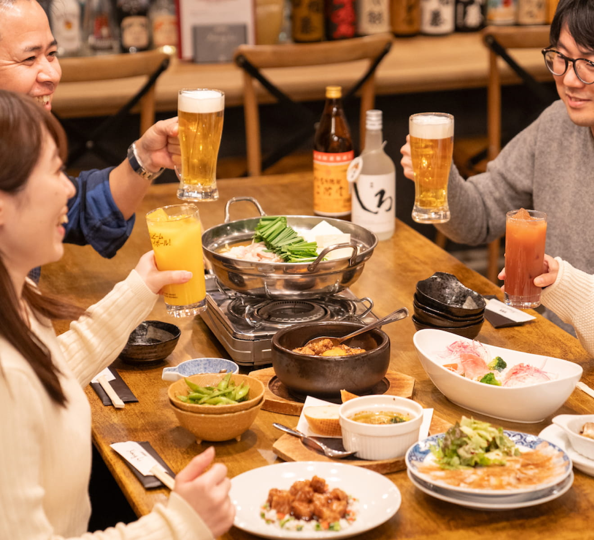
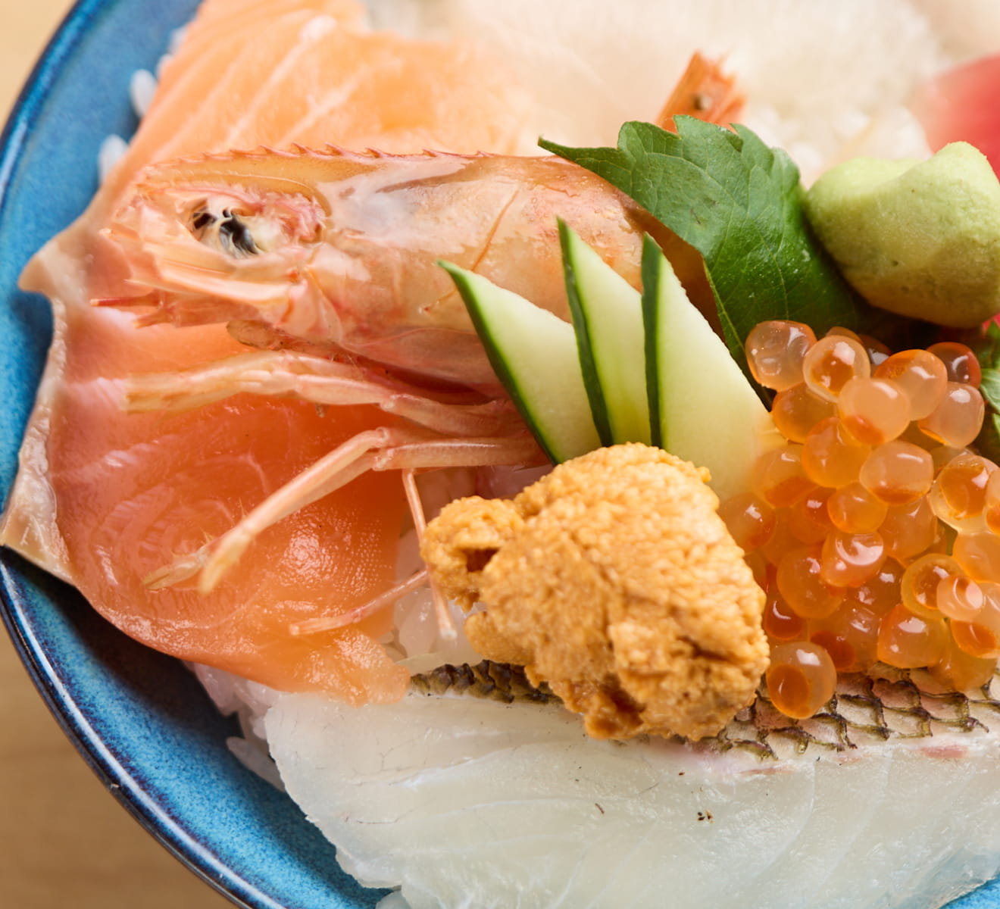
佐賀城、九年庵、吉野ヶ里遺跡などの名所旧跡や、バルーンフェスタや有田陶器市などの大型イベントなど、様々な観光資源に恵まれた佐賀県には通年、多くの方が観光を楽しまれます。そんな佐賀の中心地は佐賀市。このサイトでは佐賀市でお勧めの飲食店２件をご紹介します。いずれも料理にはこだわりがあり、美味しさは地元でも評判！かつ、アクセスしやすい立地です。ご家族やお仲間とのご飲食はもちろんのこと、プロアマ問わず、全国のバスツアー企画者の方にもお勧めです！
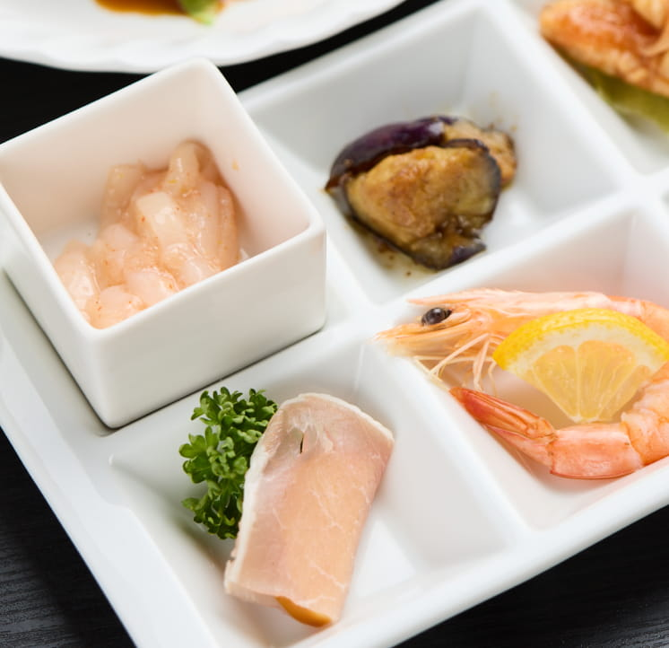
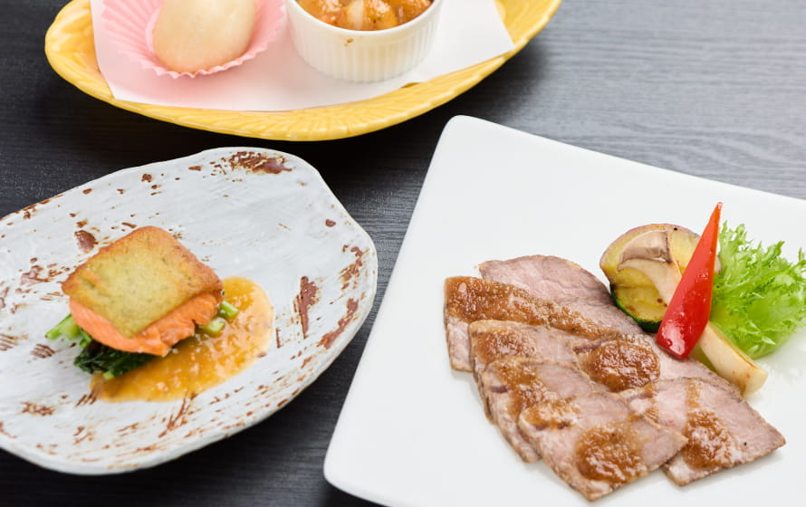
JR佐賀駅から
100メートル！
佐賀観光を彩る、
美味しい本格中華と
洋食メニュー。
旅行中のお食事に、
仲間との飲み会に！
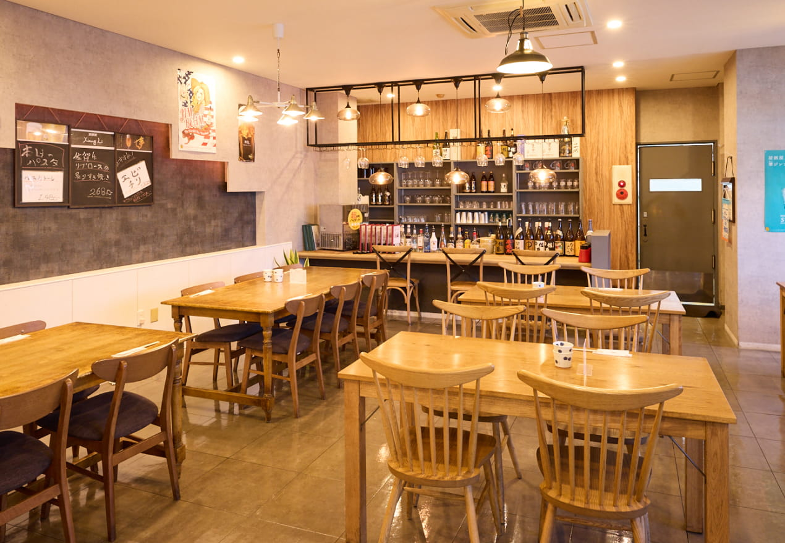
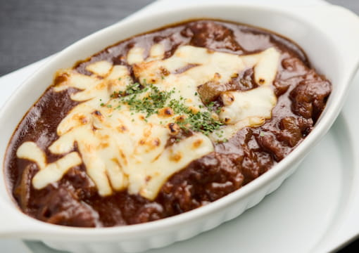
おすすめポイント！
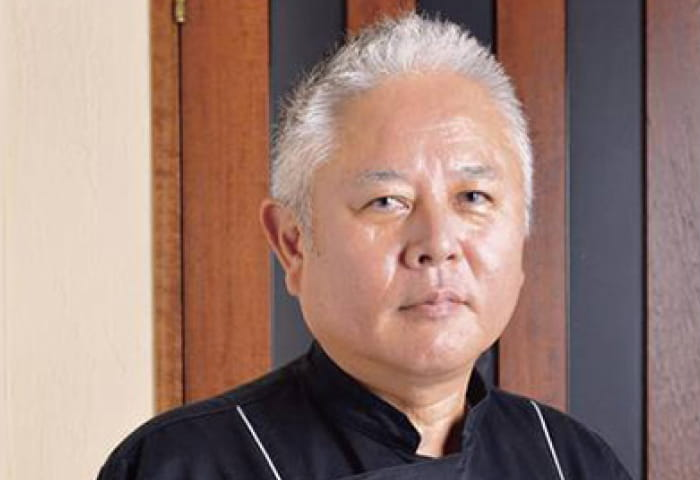
シャンリーはなれのオーナーは立岡池敏（たておかちとし）。九州ではTV番組などメディアに度々登場する有名シェフです。日本の四川料理の父・陳建民氏のもとで修業を積み、ホテルの料理長時代には皇族や歴代総理大臣にも腕を振るった経歴を持ちます。当店の中華メニューは立岡の監修による絶品ばかり。洋食が専門の店長による気軽に楽しめる洋食メニューも取り揃えています。
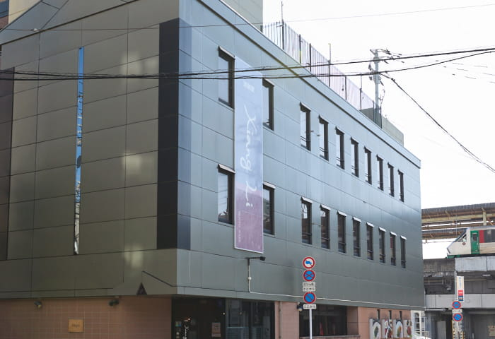
JR佐賀駅の北口からわずか100メートルの場所にシャンリーはなれはあります。遠方からのご来店にとても便利な立地です。周りにビジネスホテルが多数あることもお勧めポイント。泊まりでのツアーや個人のご旅行での夕食・宴会に最適です！
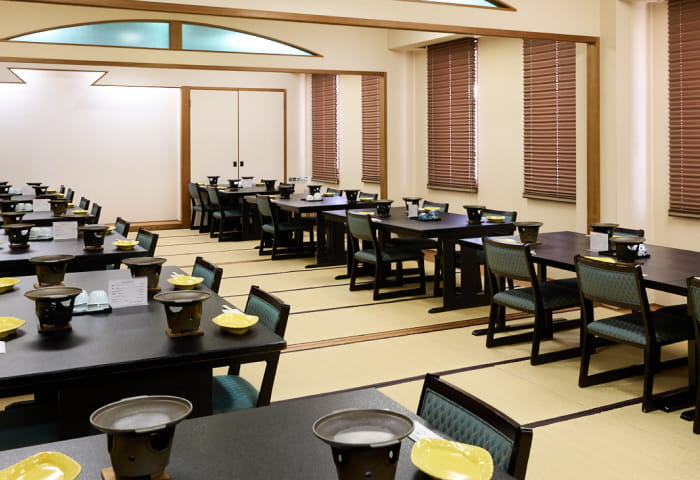
一階は気軽にお立ち寄りいただけるテーブル席。二階は畳敷きの広いご飲食スペースとなっています。 二階は50名様まで対応可能な完全個室（6名様からご予約可能）です。畳敷きですが椅子スタイルでのご用意も可能。正座が苦手なお客様やご高齢のお客様に喜ばれています。
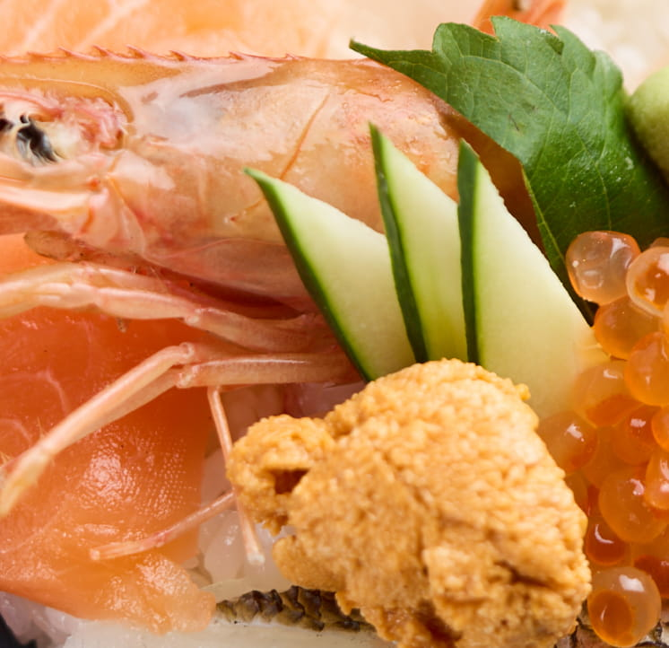
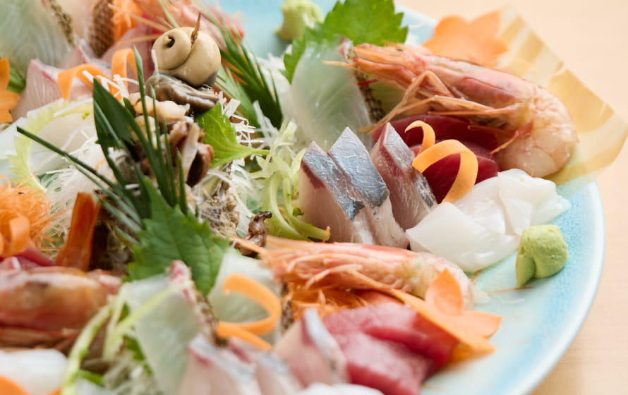
迫力の生け簀を囲んだ
開放的なお食事空間。
活きの良い鮮魚料理を
ご堪能いただけます。
広い駐車場には
大型バスの駐車も可能！
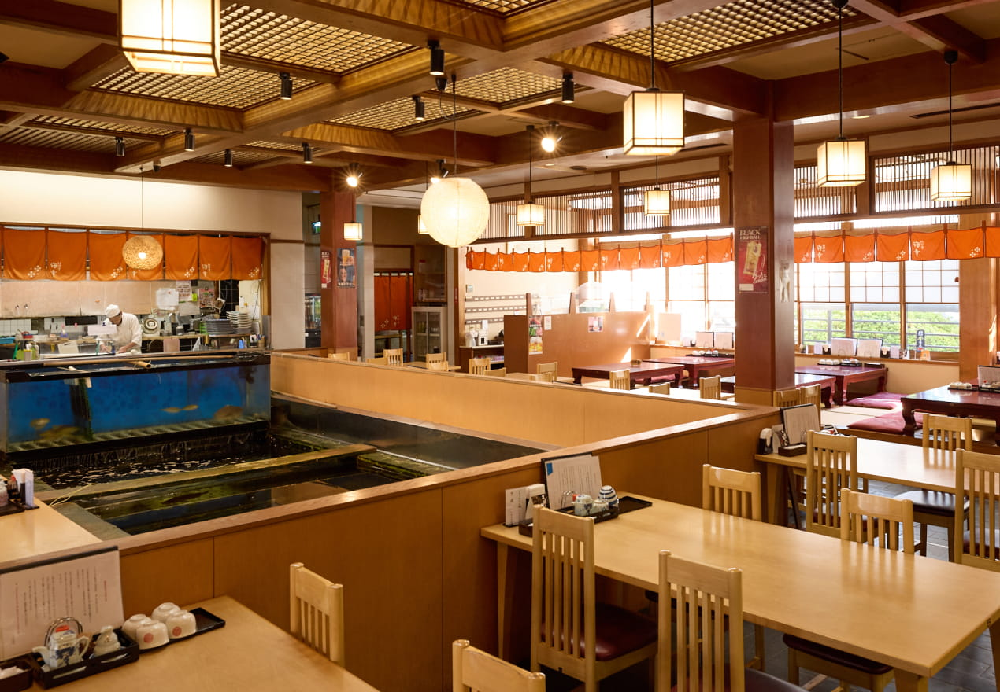
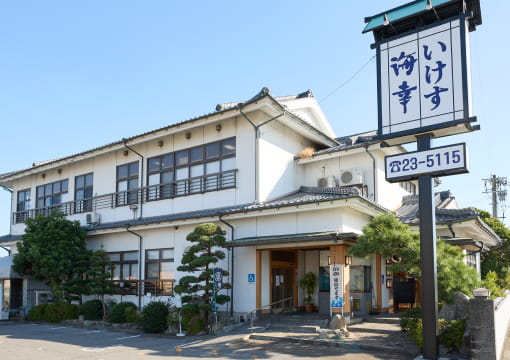
おすすめポイント！
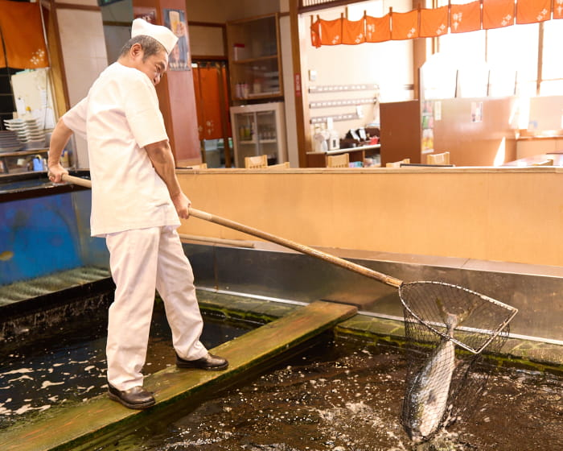
店内１階中央の大型生け簀には、玄界灘で水揚げされた真鯛、カンパチなどが悠々と泳いでいます。店内にはアジとイカが泳ぐ水槽も。お造りの主役はこの生け簀から揚げたての新鮮なお魚！コリコリとしたフレッシュな食感は生け簀料理ならではです。
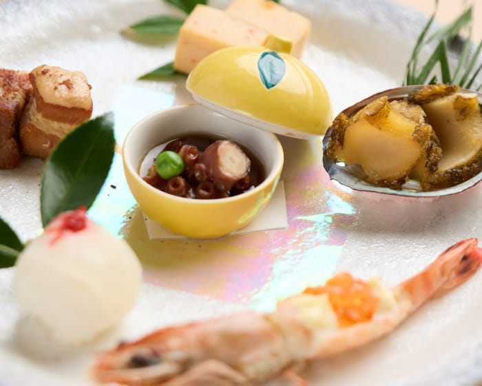
海幸の調理場で腕を振るうのは和食の職人を中心とした熟練の料理人たちです。長年の経験を活かした素材を活かす繊細な料理を、お手軽なお値段でお楽しみいただけます。
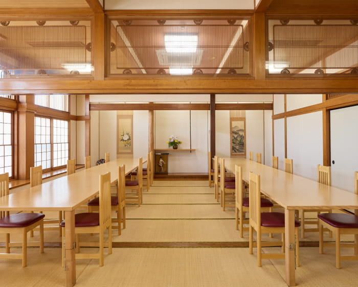
2階の広い座敷スペースは、ご高齢のお客様に喜ばれるテーブル席でも、最大100名ご利用が可能な座布団でのご用意も可能です。1階はカウンター・テーブル・小上がり席をご用意。1,2階合わせて最大180名まで対応可能です。ご予約の際、座席についてのご要望もお申し付けください。